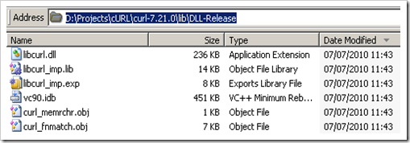

64 bit cURL with OpenSSL on Windows¶
- date
2010-07-09 12:26
- author
admin
- category
mapserver
- tags
64bit, cURL, libcurl, ssl
- slug
64-bit-curl-with-openssl-on-windows
- status
published
|image|MapServer makes use of libcurl.dll to connect to web resources. The reason I’ve had to learn this is because libcurl.dll is vital when using MapServer as a WMS client, or “a cascading WMS server” using MapServer to connect to another WMS server and then “forward” them as if they were any other map layer.
libcurl.dll is the library version of the command line tool cURL ?” a tool written in C (hence the name) that:
Tamas Szekeres maintains a site that dynamically builds Mapserver from source on a nightly basis using different versions of MapServer, and GDAL, for both 32 and 64 bit Windows. Unfortunately for me I wanted to connect to a WMS using MapServer that used the HTTPS (Hypertext Transfer Protocol Secure) protocol. When I tried connecting to the WMS service with MapServer the log file reported the following error:
msHTTPExecuteRequests(): HTTP request error. HTTP: request failed with curl error code 1 (Protocol https not supported or disabled in libcurl) for https://webservices…
The libcurl.dll included in the MapServer build doesn’t support SSL (Secure Sockets Layer). That sinking feeling of knowing I was going to have to get my hands dirty and start messing about compiling things I didn’t understand was soon upon me..
There are many different compiled versions of cURL and libcURL you can download from the download page but unfortunately at the time of writing there were no Windows 64bit versions - however it is worth double-checking this. It is also a good idea to check that the MapServer builds haven’t been updated to include SSL before going through the lengthy steps below. There are precompiled versions of the cURL.exe tool out there in the Internet for 64 bit Windows, but MapServer requires the DLL library as shown below:
So currently if you require 64 bit and SSL it looks like you have to compile your own version, hence the following steps.
cURL Compilation Steps ?” Part One¶
These steps are based on information gleaned from this cURL mailing list post and this StackOverflow question and answer. The second link is particularly good, but a few extra details can save many hours of time. If you are familiar with compiling C libraries then its probably best to skip to to StackOverflow now. If, like me, you’re not too sharp on C then follow the steps below. There is also theofficial compilation steps guide which provides more detail.
1. Download the latest source archives from the cURL download page. At the time of writing links to these were at the top of the page, and in this example the file was named curl-7.21.0.zip. Fortunately it seems that the libcurl.dll version number does not need to match the version installed with the MapServer build.
2. Unzip this file somewhere on your machine. Avoid spaces to avoid future problems. In this example I unzipped the files to D:\Projects\cURL\curl-7.21.0
3. In the root of the folder you unzipped should be a vc6curl.dsw file (a Visual C++ workspace file). I’m assuming you have Visual Studio installed ?” I’m using VS2008. If you double click this file it should open with Visual Studio ?” allow it to convert to the new project format.
4. Once the project opens go to Build >> Configuration Manager. Set the parameters to DLL Release, x64.
If x64 is not present in the drop-down list you may have to create a new “Solution Platform”, and copy the settings from the Win32 configuration:
5. Now we have to make sure that the DLL is built with SSL support. To do this we add a couple of “Preprocessor” parameters. To do this right-click on the libcurl project in the Solution Explorer window:
Then in Configuration Properties >> C/C++ >> Preprocessor add USE_SSLEAY and USE_OPENSSL as shown below. The NDEBUG parameter indicates “No Debugging.” Note there is also a WIN32 option - I compiled a x64 DLL successfully using both WIN32 and WIN64. I had a brief look at the source, but it is probably best to set to WIN64.
OpenSSL Compilation Steps¶
6. Now you’re probably thinking that you can now compile. If you are optimistic then you probably will. But unless I’ve completely misunderstood how all this ties together, you are still many steps away from getting that libcurl.dll file..
If you require SSL, you also need to compile the OpenSSL library. This compilation can all be done from the Windows command line. The source code can be downloaded from this link. I used the latest version available - openssl-1.0.0a.tar.gz. Download this and unzip (use 7-Zip to handle those pesky tar-balls), again unzip to a folder without spaces in the path to be on the safe side.
7. Once unzipped there is a INSTALL.W64 file in the root which provides details on compiling OpenSSL for Windows x64. These steps are fairly well-detailed, but a few screenshots don’t hurt. There are a few warnings in this file not to try and download 4GB files, but as it says it is very unlikely these issues would occur in the real world.
The first step to compilation is to install Perl ?” a language I’ve never used, but it seems the OpenSSL compilation steps have been automated with Perl scripts. The document recommends using ActiveState Perl, but I read that using Strawberry Perl on Windows would be a better choice. After downloading and installing Strawberry Perl, I logged off and on again to make sure the Windows environment variable were updated and continued the compilation.
8. I opened a Windows command window and made the OpenSSL folder the active directory:
cd D:\Projects\cURL\openssl-1.0.0a
9. Next I set up the Windows Visual Studio environment by running the following command. This batch file assumes that you are developing on a 32 bit machine to deploy on a 64 bit machine. There are a number of similar batch files in the parent folder if your set up is different.
"C:\Program Files\Microsoft Visual Studio 9.0\VC\bin\x86_amd64\vcvarsx86_amd64.bat"
10. Next I ran the Perl script from the Windows command prompt using:
perl Configure VC-WIN64A
11. Then a couple more commands:
ms\do_win64a
nmake -f ms\ntdll.mak
12. In the INSTALL.W64 there are final two steps to check everything was built correctly. As I compiled a x64 DLL on a x32 machine I couldn’t run these, but the lack of show-stopping errors filled me with hope..so back to the libcURL compilation..
cURL Compilation Steps ?” Part Two¶
13. A rebuild of libcurl.dll at this stage will lead to “fatal error C1083: Cannot open include file: ‘openssl/rsa.h’: No such file or directory”. The Visual Studio project needs to reference the OpenSSL files we just built. First of all add an “Include Directory” to the libcurl project pointing to the openssl\inc32\ folder as shown below. This is where all the .h header files are kept.
14. Trying to recompile now (I’m an eternal optimist) leads to “error LNK2019: unresolved external symbol DES_set_key referenced in function setup_des_key” errors. The project now can’t find symbols stored in the OpenSSL .lib files. I ran a Windows search on the OpenSSL folder to find these .lib files:
Next I found a handy tool that could export this search list to text, so I could copy and paste references. The list of .lib files is below. I added these to the “Additional Dependencies” list in the project’s “Configuration Properties >> Linker >> Input” option.
I also needed to make Visual Studio aware of the location of these files by going to Tools >> Options >> Projects and Solutions >> VC++ Directories, and pointing to openssl-1.0.0a\out32dll, making sure “x64” and “Library Files” were selected in the drop-down lists as shown below:

15. Finally I could run Build >> Build libcurl from Visual Studio. A brand new libcurl.dll file appeared in the \lib\DLL-Release folder. Done ?” for now. There are a number of other steps and DLLs to include to get MapServer working, but that is for another post.
Errors?¶
There are a number of errors I encountered during these steps that may lead you to this page:
‘cl’ is not recognized as an internal or external command, operable program or batch file.
Make sure the Visual Studio environment has been set up correctly using “C:\Program Files\Microsoft Visual Studio 9.0\VC\bin\x86_amd64\vcvarsx86_amd64.bat” or similar.
error A2088:END directive required at end of file NMAKE : fatal error U1077:
I got this error when compiling OpenSSL (when running ml64.exe), as previous failed compilation attempts had left files in the “openssl-1.0.0a\tmp32dll” folder. Deleting the contents of this folder got rid of this error.
- orphan
Comments¶
1. GIS-Lab Blog» Архив блога » Новости вокруг 49 **
[…] Советы разработчику, начинающему работать с ГИС. […]
ReplyAdd Comment